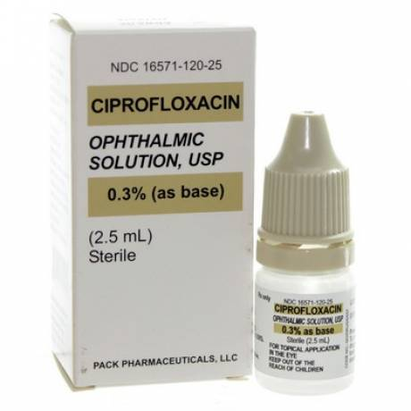

Last Wednesday My dog Hootie had an eye infection. I took her to the vet to get treated. The staff was very helpful and kept her calm during the exam.
Hootie needed lots of medicine. I had to give her antibiotics and pain meds by mouth. The tricky part was the eye drops and ointment around her eye.
,